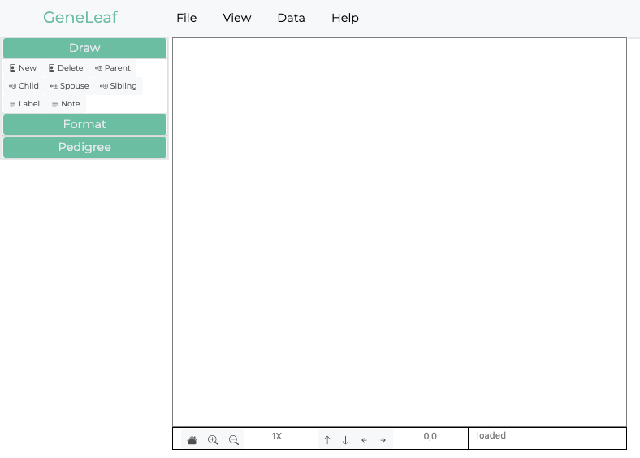

Getting Started¶
GeneLeaf is a visual editor for genomics, allowing users to quickly and intuitively add and update information on family relationships in the form of Pedigree or Genogram diagrams. GeneLeaf is a SaaS application, which users can access securely via the web, but supports offline storage of pedigree files in a proprietary format (.glf) as well as interoperability with other common pedigree file formats as well as common image formats (.svg, .png and .svg).
GeneLeaf uses standard conventions to represent the family relationships included in Pedigrees, as in the example below. Pedigrees are visual representations of family relationships. These diagrams follow a specific set of formatting conventions to represent family information. These include the following key components:
Squares/Circles: used to represent males & females
Affected: color (including black) is used to indicate that an individual is affected by a condition.
Spousal relationships: represented by horizontal bars between individuals
Sibling relationships: represented by horizontal bars above individuals
Generation relationships (parents/children): represented by vertical bars

In the figure above, two cousins members (1 male and 1 female) are affected.
Input Modes¶
GeneLeaf is designed for ease of use, including intuitive data input modes, including:
Drawing Pallet - click on any of the icons in the drawing pallet and then click on the drawing area to draw that item.
Menus - use menus to navigate to the task you wish to execute.
Keyboard shortcuts - keyboard shortcuts enable you to quickly execute standard tasks.
- Triggers - Each pedigree symbol can be selected by clicking on it. This will cause four triggers to be displayed. Clicking each of these triggers will result in the following actions:
North - add parent
South - add child
East - add spouse
West - add sibling
Your First Pedigree¶
After following these simple steps, you will have created a simple pedigree as well as having mastered the basic concepts of pedigree drawing with GeneLeaf. Start by opening the GeneLeaf App . You will be presented with a screen similar to the following:
{kind=link}
Create Individual: To draw your first individual, double click on the drawing canvas. This will create an individual at the spot where you click and select that individual (showing the 4 blue triggers), opening its properties in the dialog on the right. Here, we should note:
Double clicking the canvas is one way to create individuals. However, you could also have clicked on the new button under the draw panel on the left.
Selecting an individual will show the 4 blue triggers and display the selection’s properties in the panel on the right.
{kind=link}
Add Spouse: Let’s add a spouse to this individual. The simplest way to do this is to click on the button labelled ‘spouse’ in the Draw panel on the left. This will add one spouse to this individual
Another way to add a spouse is by clicking the East Trigger, on the right of that individual.
attempting to add additional spouses is not allowed and will not result in any action.
The new spouse’s sex is automatically set to the opposite of the current spouse. However, this is done for your convenience and may be manually changed.
{kind=link}
Add Child: Let’s add a child to this couple. The simplest way to do this is to click on either parent (selecting them) and then click on the button labelled ‘child’ in the Draw panel on the left. This will add one child to this couple. Clicking on this again will add additional children.
Another way to do this is to click on the South Trigger, at the bottom of either parent.
Clicking the trigger additional times will add more children.
{kind=link}
Edit Individual Properties: Now that we have created our basic family, let’s edit the information of each individual. Start by selecting the first individual you added by clicking on his symbol. This will open the selection panel on the right of the drawing panel. Here you may edit any of the individual’s attributes including name, date of birth, sex, etc.
ID: Each individual is assigned a non-editable ID upon creation. This is displayed in non-editable form.
RN(Record Number): This is a custom record number which may be edited.
Category: This is the general category to which an individual belongs, and includes special symbol categories such as pregnancy, miscarriage, stillbirth, infertility
Sex: Selecting male, female or other results in the corresponding representation of the individual on the pedigree.
Attributes: These include standard attributes commonly represented in pedigree diagrams, including proband an deceased.
{kind=link}
Add custom data fields: Let’s add a custom data field to this individual. First, select the slider next to Basic mode to switch it to Advanced mode. This will display the custom data fields below. Since no data fields have been added, click the button labelled +Add Field to add a new field. Let’s add a field for eyes. Let’s set this individual’s value to ‘blue’ (i.e., blue eyes).
{kind=link}
6. Add custom formatting rule: Let’s add a custom formatting rule so that when individuals have data field values that match our criteria, they will be displayed to reflect this. * 6.1 In the left panel, click the tab labelled Rules. * 6.2 Click the button labelled +Add Formatting Rule. This will open a dialog box. * 6.3 Edit the values in the dialog box so that it includes the following:
Action: UL this will color the Upper Left corner of the symbol
Color: Select the color you want to show.
Key: Select the attribute or data key that you wish to evaluate. Select the field key eyes which you just entered.
Logic: Select the operator Equal, so that the effect will be applied when the key equals the criteria you specify.
Criteria Enter the value blue, so that the effect will be applied when eyes equal blue
6.4 Your rule should look like this:
{kind=link}
Click the button Update Rule to apply your settings. Your pedigree should look like this:
{kind=link}
7. Save File: Let’s save your pedigree as a GeneLeaf file. Click the file menu and select Save as GeneLeaf file (.glf). Select the location where you wish to save the file on your desktop. * You may also save the file as an image file (svg, png or pdf).
{kind=link}
Open File: Let’s try opening the file you just saved. First, refresh your browser to clear the workspace. Next, click the file menu and select **Open GeneLeaf file (.glf). Select the file you saved above. You should see the same pedigree in your browser.
{kind=link}
Learning More¶
GeneLeaf Community - join the Geneleaf community.
Contact us - email us your questions.
Pedigree Symbol Reference:¶
GeneLeaf follows widely-supported conventions for Pedigrees, as summarized in the reference sheet below.
{kind=link}